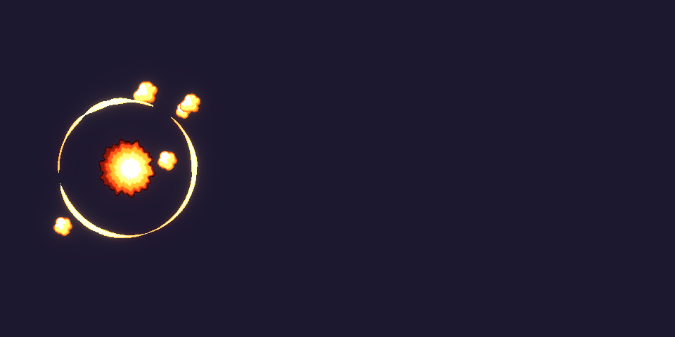
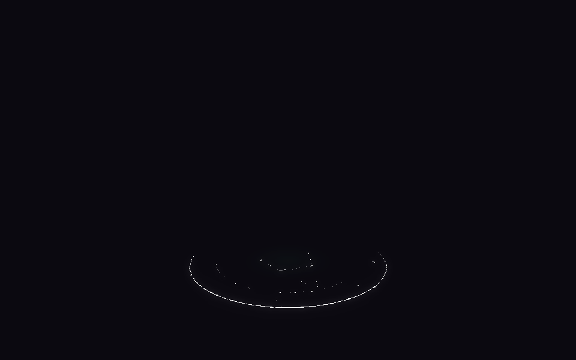
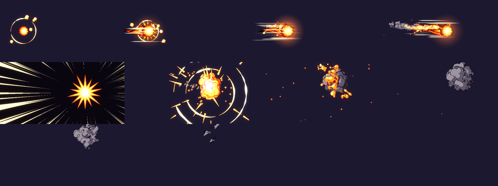
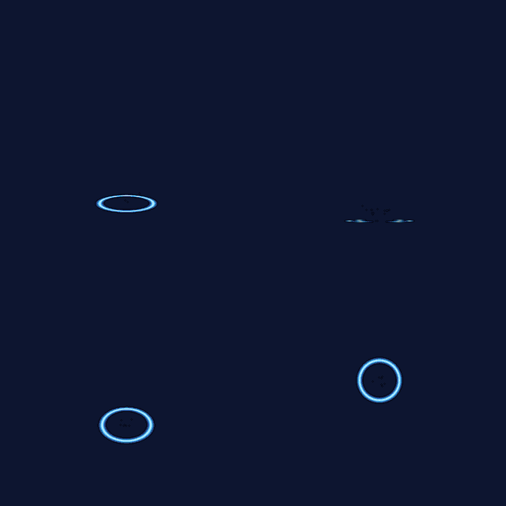
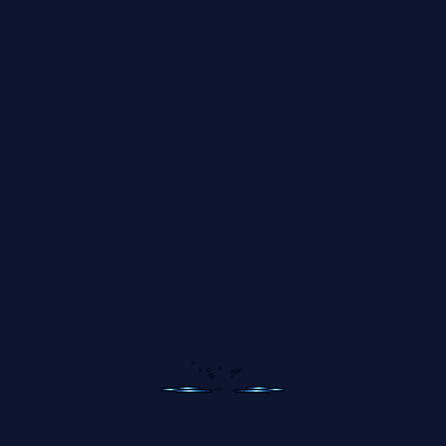
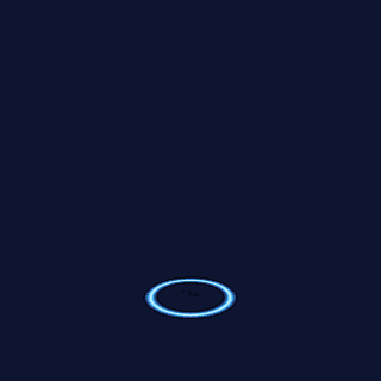
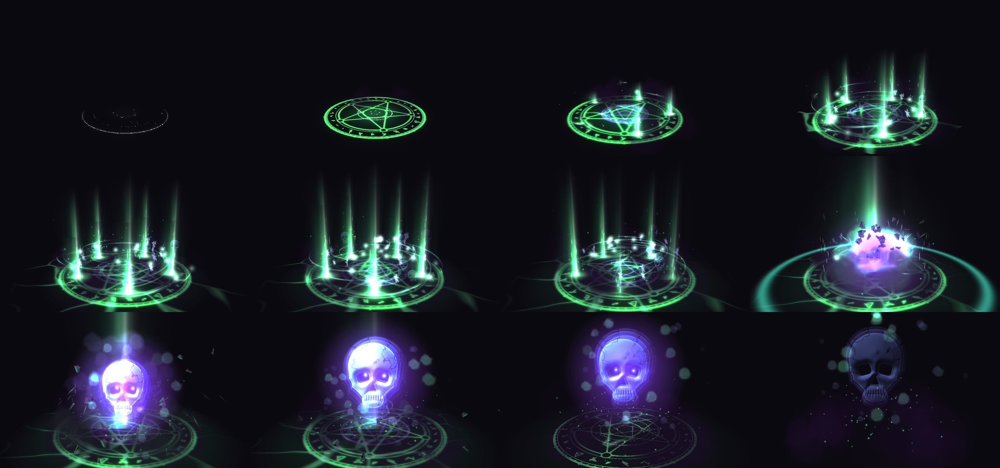
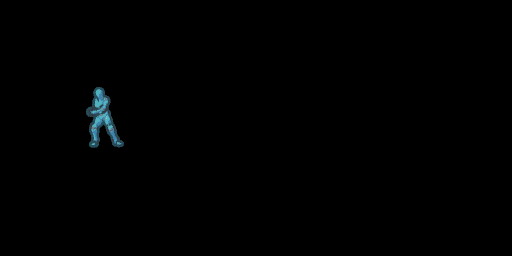
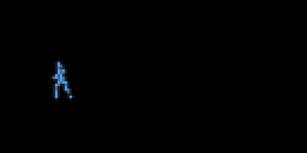

Efeitos de jogo escritos em código, compilados pelo Effekseer
e entregues como GIF, sprite sheet e .efkefc.
anime 2D pixel art 3D suave


Nenhum clique no editor: texturas, partículas, câmeras e render saem do script.
Bola de fogo · anime 2D

Prancha de revisão gerada automaticamente: é assim que cada rodada é conferida.

Furacão de gelo · pixel art

baixa (herói)
de cima

órbita
Invocação necromante · 3D


Y Bot lança a bola de fogo · anime

mesmo golpe · pixel art com paleta
slash anime
wizard card
power-up PBR
Tudo isso virou ferramenta: a skill effekseer-vfx agora traz os estilos,
o gerador de texturas e o visualizador de GIF.